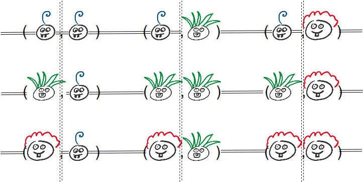

In the game of guess who, two opposing players pick a character from a given set of characters. The characters that players can choose have various attributes such as the colour of hair or wearing glasses. It is up to players, to guess what character his or her opponent has chosen in order to win the game. Players may ask binary questions about the attributes in order to gain informatiom on which characters the opponent may, or may not have chosen.
The variant that is analysed here is symmetric Guess who. Here, once a player asks a question about an attribute, both players have to say whether or not their character satisfies the mentioned attribute (truthfully). The implications of the symmetric gameplay is that players may be unable to ask direct questions when it would reveal which character they are playing themselves. Thus, as a player, you need to have information on what your opponent knows about your character. It may even help to know what your opponent thinks you are going to do next.
The game is analysed here using epistemic logic. We use the knowledge operator K to represent what knowledge is held by each player. A Kripke model in S5 is shown below. Each world consists of a pair of characters such that each player has chosen a character. Since each player knows what character they have, they know which characters they do not have. Therefore, e.g. player 1 can only access worlds where the character for player 1 is the same as the one he chose. This means that worlds have connections to each other world where the local state is preserved, much like the distributed systems used in chapt. 1.8, "Epistemic Logic for AI and Computer Science" by Meyer and van der Hoek (1995).

The system shown above uses double lines to indicate that every state along that line can be reached from any other state reached. Notably, states along these lines can make 'jumps' to another state along the same line. Given that players know which attributes their character has, players may only access states in which this chosen character is the same. Thus, there is a horizontal and vertical double line for player one and two respectively, in order to access the reachable states.
We have indicated the propositions that are true in a world by showing the avatar for each player. The avatars, here, forms a specification on propositions that are true and false by visualising the attributes of the characters, such as red hair and having two teeth. Then, the visualisation marks whether a given proposition is true or false.
An interactive game is shown below: